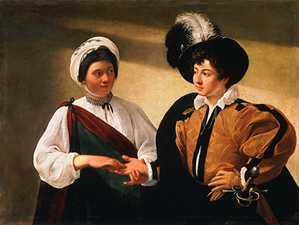
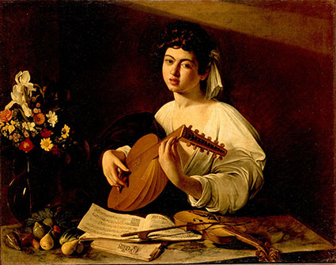
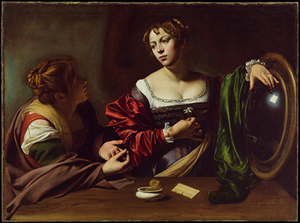
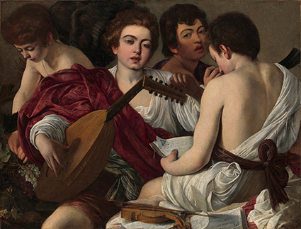

Carrossel de imagens
Clique nas setas para navegar.

A adivinha
, de Caravaggio. Óleo sobre tela,
99
cm
×
131
cm
, 1596-97.
Crédito
: MUSEU DO LOUVRE, PARIS, FRANÇA

O tocador de alaúde
, de Caravaggio. Óleo sobre tela,
94
cm
×
119
cm
,
c.
1595.
Crédito
: MUSEU HERMITAGE, SÃO PETERSBURGO, RÚSSIA

Marta e Maria Madalena
, de Caravaggio. Óleo sobre tela,
100
cm
×
134
,
5
cm
, 1598.
Crédito
: INSTITUTO DE ARTES DE DETROIT,
EUA

Os músicos
, de Caravaggio. Óleo sobre tela,
92
,
1
cm
×
118
,
4
cm
, 1595.
Crédito
: MUSEU METROPOLITANO DE ARTE, NOVA YORK,
EUA